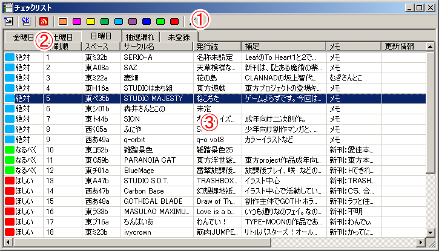

チェックリストには、お気に入りのサークルを色分けして登録することができます。
そのチェックリストの管理を行うのが、チェックリストウィンドウです。
チェックリストに登録したサークルは、サークルカットウィンドウやマップウィンドウで色づけされて表示されます。
また、チェックリストに登録されたサークルの一覧を、好みの形式で印刷することができます。
チェックリストはファイルに保存することができるので、複数のリストを別々のファイルに保存して使い分けることも可能です。
チェックリストウィンドウは以下の3つの部分から構成されます。

チェックリストに登録されたサークルのチェック色を変更したり、チェックを解除したりすることができます。
チェックリストは参加日ごとに分かれているので、その切り替えを行います。
表示したいリストを、各参加日、抽選漏れ、未登録の中から選択します。
未登録タブ内には、過去のチェックリストの読み込み（インポート）時に、一致するものが見つからなかったサークルが登録されます。
チェックリストに登録されたサークルが、リスト形式で表示されます。
各列のタイトルをクリックすることで、その項目で降順・昇順でのソートを行ったり、サークルを選択してドラッグドロップすることで、順番を手動で変更することもできます（リストロックしていない場合のみ）。
チェックリストのサークル一覧を複数選択してコピー（CTRL-C） すると、サークル情報をクリップボードに対してコピーすることができます。内容はCM65形式の保存データになります。
また、逆に、クリップボードに、保存データ形式のデータがある場合、ペースト（CTRL-V）するとチェックリストに対してそれらのサークル情報がチェックされた状態になります。